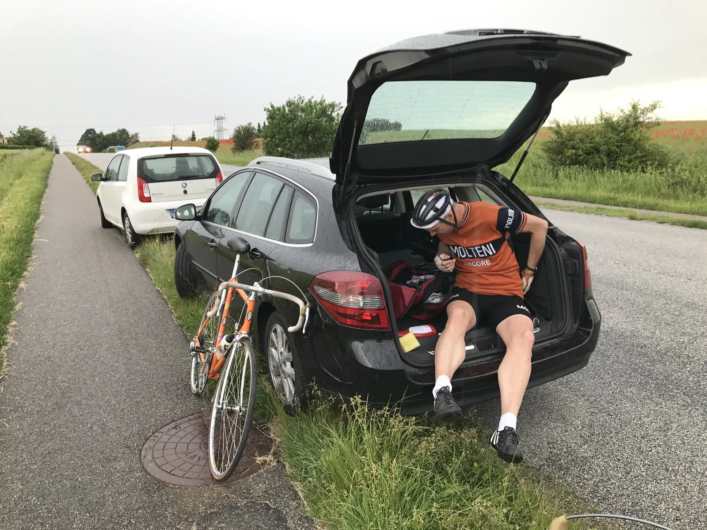
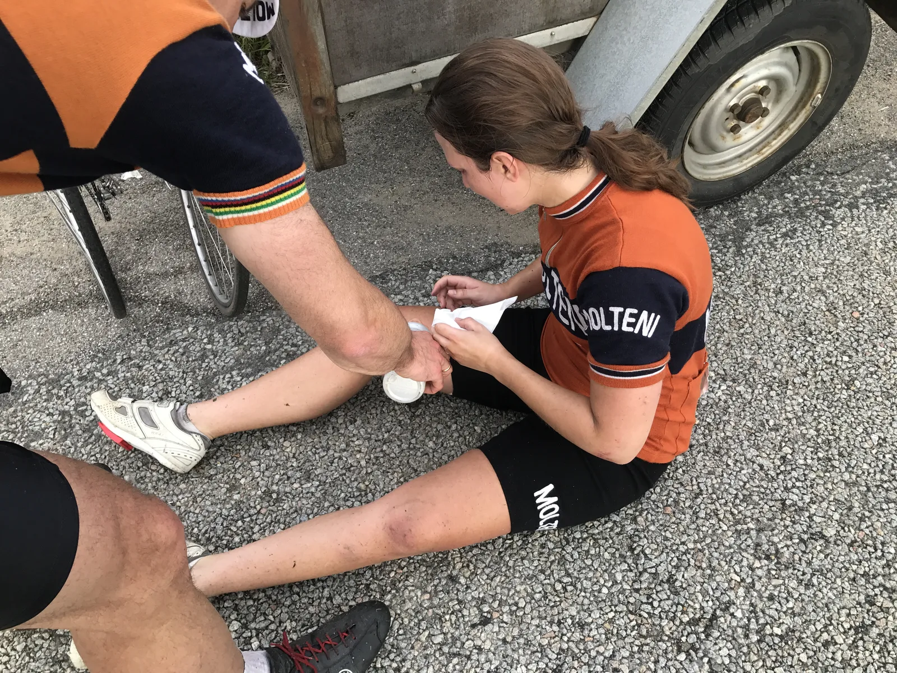
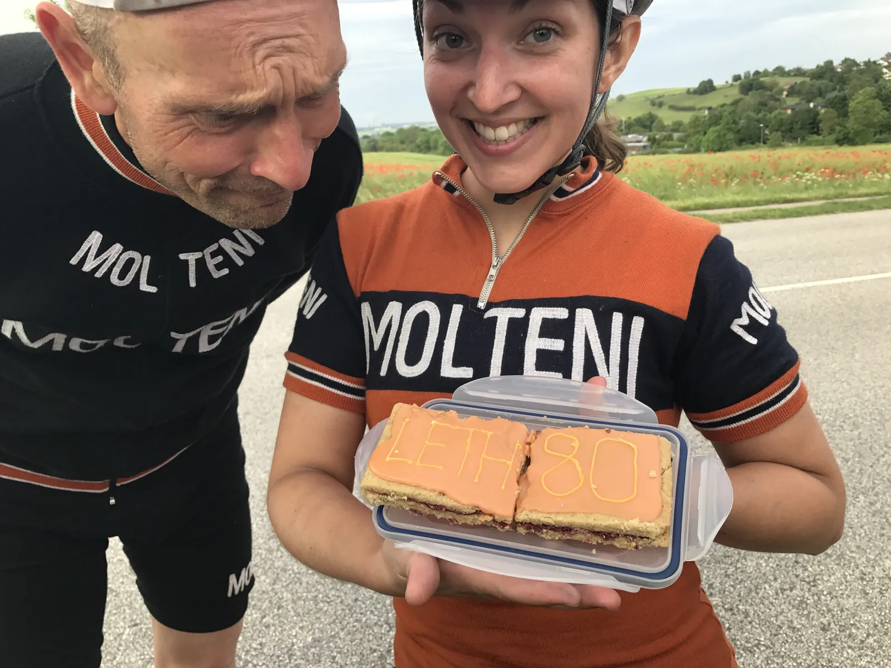

Dramatisk holdløb i Tilst: Snyd, snitter og styrt

En veltimet og perfekt udført strategisk plan blev efterladt på asfalten i Tilst. Holdløbet blev alt andet end den sejrsceremoni, der var lagt op til.
Inden holdløbet i Tilst, havde der været stormøde internt på Squadra Molteni. Rytterne var trætte – trætte af at køre holdløb i øs regnvejr.
Først sommerregn i Mårslet der kostede Svend en tur ud over gedebukkestyret, og så styrtregn i Lund, der kostede Kasper et par eksploderede lunger.
Meldingen fra kaptajnen var klar:
– Vi kører kun i Tilst, hvis det bliver godt vejr. Jeg gider ikke mere regnvejr, lød det i et internt memo til holdet.
Derfor blev tilmeldingen foretaget i sidste øjeblik, da vejrudsigten var allermest lovende.
Gamle mænd og hurtige damer
En klar plan var lagt, holdets ingeniør, Grane, havde udregnet DGI’s gennemkorrupte tidstagningmodel, og var kommet frem til den perfekte holdsammensætning.
– Da Grane ringede med resultatet af hans matematiske beregning, troede jeg først at han talte om vores sommerferie til Sunny Beach, udtaler sportsdirektør Niels Bjørnsteen.
Den store matematiske pil strittede kun i en retning, når det kom til den perfekte holdsammensætning: Gamle mænd og hurtige damer!
Så Niels, Grane, Svend, Kasper og Maria satte næsen mod Tilst.
Kaptajnens alzheimers redder deltagelsen
Knap havde holdkaptajn Niels Bjørnsteen parkeret direktørbilen i rabatten i Tilst, før det begyndte at regne.

Heldigvis havde kaptajnen forlagt sin bilnøgle.
– Havde hans alzheimers ikke været så fremskreden, havde han helt sikkert sat sig i bilen og kørt hjem. Han var rasende. Heldigvis havde han lagt bilnøglen hvor han plejer – i sidelommen – og glemt det. Så der gik heldigvis 10 minutter før han fandt den, og der var det blevet tørvejr, fortæller Kasper.
En velsmurt dieselmoter i aktion
Squadra Molteni’s veltimede tilmelding sikrede en startposition som sidste hold. En favoritværdighed vi har det godt rigtig godt med. Arrangørerne havde sørget for, at lungerne kunne opvarmes ved at indånde dampene fra en velsmurt firetakts dieselmotor.
Første omgang taler vi ikke om, men anden og tredje omgang blev kørt i forrygende stil. Her tog Niels sagen i egen hånd.
– Niels var som en maskine. Han førte ¾ af løbet, og havde det ikke været fordi vi skiftedes til at holde fast i hans våde uldtrøje, så havde han sikkert kørt derude endnu, udtaler Svend.
Forbyttede blodposer, Fugslang og Kiddesvej i benene
Grane havde endnu ikke glemt Kiddesvej, og var næsten ikke til at holde tilbage på bakkerne. Kasper måtte flere gange mane ham til ro. Svend og Maria viste deres styrke, og kørte stabilt hurtigt hele turen, men Kasper led så forfærdeligt.
– Jeg ved ikke hvad der sker. Sidste uge blev jeg sat på første omgang. Jeg har ellers fulgt programmet til punkt og prikke, fortæller Kasper.
En tilbundsgående undersøgelse har senere vist, at der for to uger siden er sket en fejl med holdets blodposer. Kasper’s blodpose er blevet byttet ud med en anden rytters ved navn Jakob Fuglsang. En opdagelse der jo forklarer en hel del.
Styrt i spurten
Til spurten lagde Grane an, og førte holdet op i en fart på den gode side af 70 km./t., og spurtede i mål med Maria limet til sit baghjul. Duften fra grillpølserne fik ham til at klemme en anelse for hårdt på bremserne, og pludselig havde han Maria oppe på ryggen – og derefter i asfalten.

Trods et hårdt styrt og huller på albuer og knæ, tog Maria det i stiv arm. Og som den storsindede kvinde hun er, havde hun mest ondt af Grane.
– Heldigvis kørte hun på en stål cykel. Med den fart havde en kulcykel været splintret til ukendelige atomer, skriver en russisk raketingeniør i en kommentar på en krypteret version af Гагарингерой.ru.
Snitter og snyd
Farten på det orange eksprestog overrumplede DGI’s maskiner, og i modsætning til normalen, blev vinderen igen fundet på mystisk vis. Forklaring lød, at det hurtigste hold, selv havde meddelt, at de ikke havde opfyldt kriterierne, og dermed frabedte sig sejren.
Ingen af rytterne fra dette hold var at finde, da det lokale TST hold blev udnævnt som vindere.
Det har været umuligt at opstøve en officiel resultatliste. Men det vurderes fra uvildige kilder, at havde det ikke været for turbulensen af den blomst, holdkaptajnen havde placeret i Maria’s hjelm kort før starten, så havde Squadra Molteni vundet stort.
Trods sit styrt, havde torta mama, Maria, endnu engang hyldet en stor legende med kage til holdløb. Denne gang var det i anledning af Jørgen Leth’s 80 års fødselsdag (sidste gang var det Merckx 70 års-dag).
Friskbagte hindbærsnitter med en hilsen til Jørgen Leth. Det er god stil!
